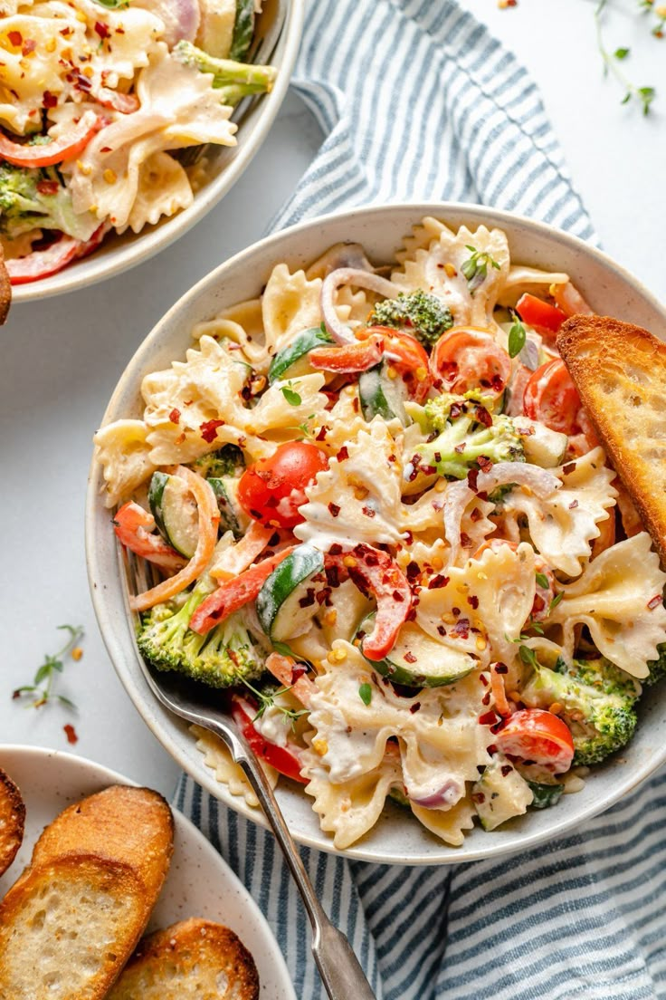
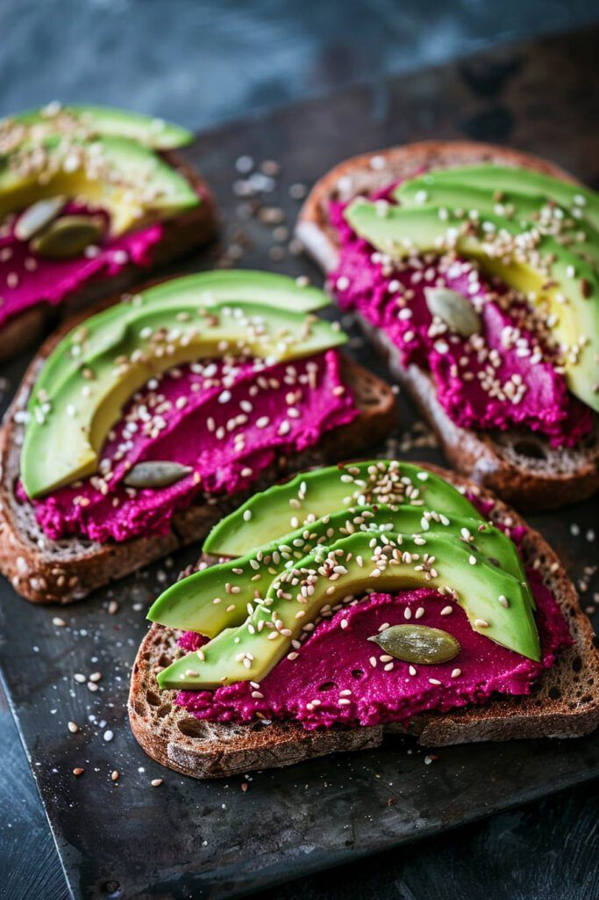
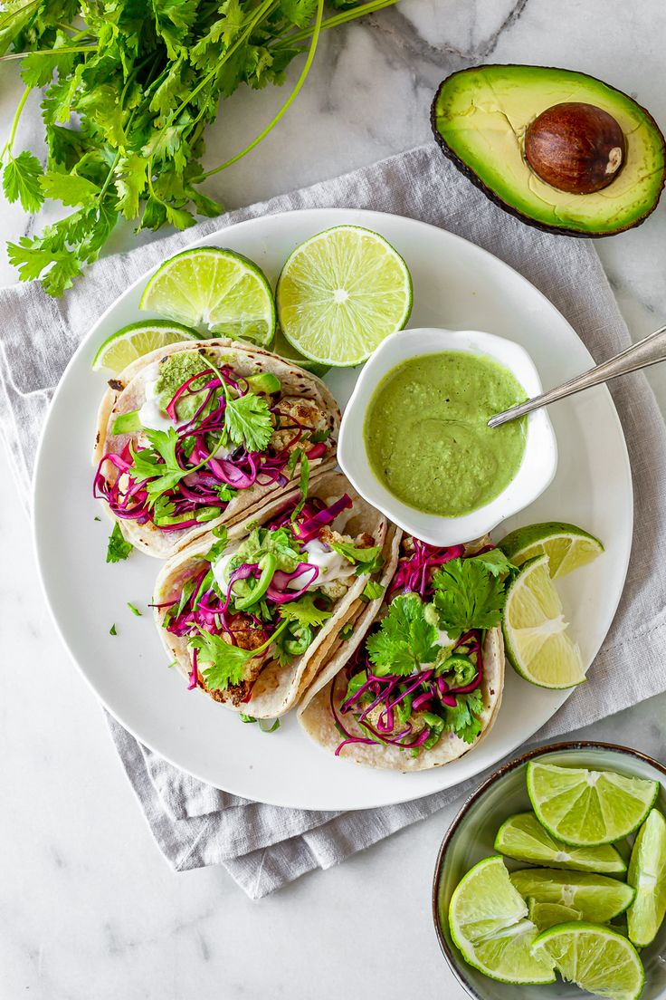
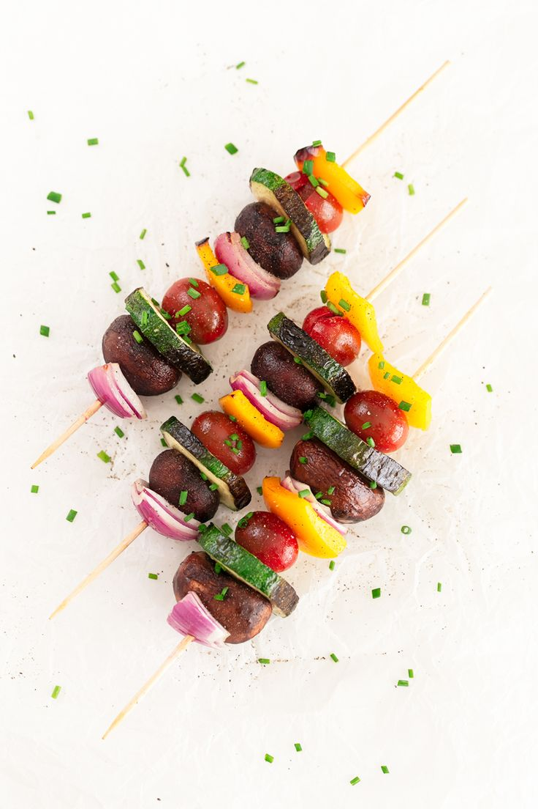
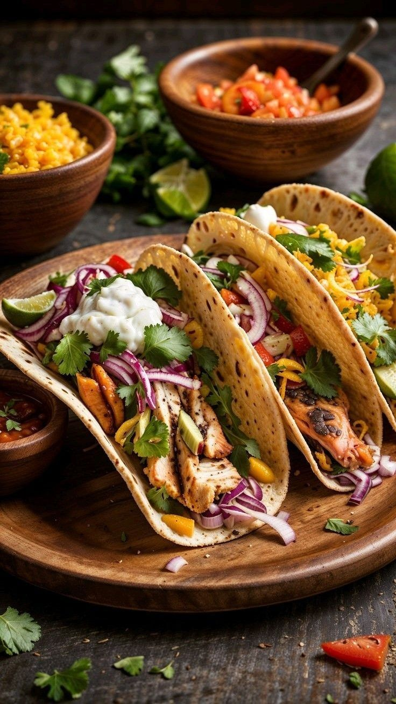
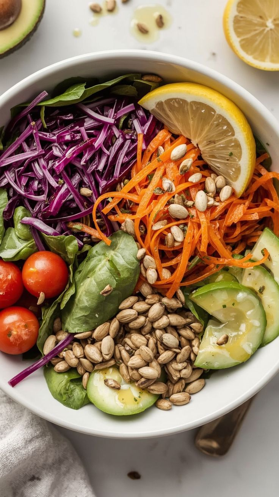
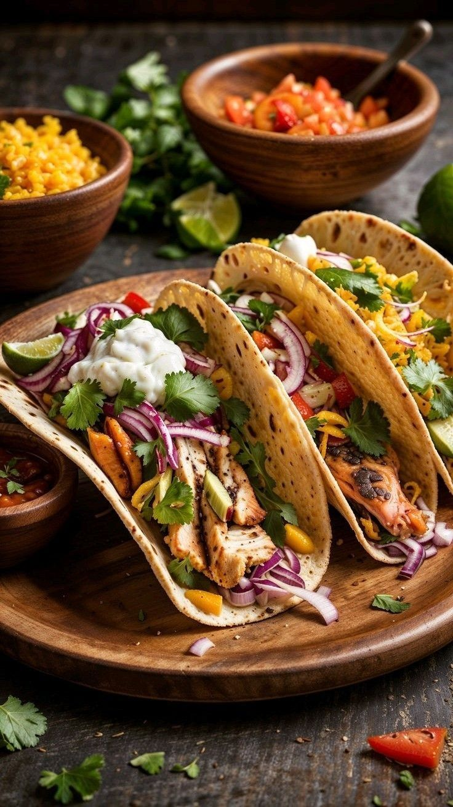
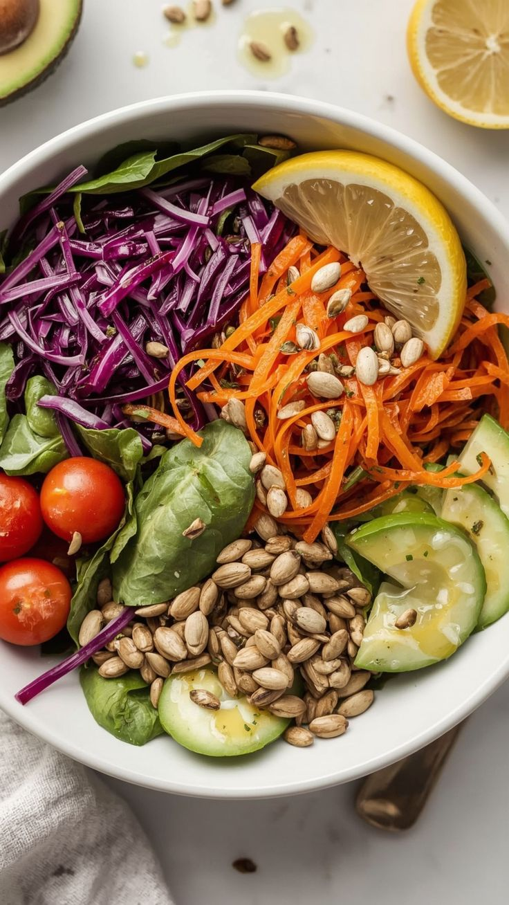

Pasta de Vegetales
Esta deliciosa pasta combina fideos al dente con un salteado de vegetales frescos como cebolla, pepino, tomate, pimentón, zanahoria y brócoli. Cada ingrediente aporta textura y sabor, creando un plato equilibrado, lleno de vitaminas y totalmente libre de productos de origen animal.
👉 Puedes encontrar recetas similares con su preparación en este canal de YouTube.

Ensalada de Vegetales o raices comestibles
Una ensalada sencilla y llena de color que combina lechuga crujiente, zanahoria rallada, remolacha dulce y semillas de ajonjolí. Este plato aporta frescura, textura y un toque de sabor tostado gracias al ajonjolí, además de ser una fuente rica en fibra, vitaminas y minerales.
👉 Puedes encontrar recetas similares con su preparación en este canal de YouTube.

Tostadas Veganas con crema de remolacha
Estas tostadas combinan lo mejor de los sabores frescos y naturales. Sobre pan crujiente se unta una suave crema de remolacha, decorada con rodajas de aguacate, un toque de ajonjolí y trocitos de pistacho. El resultado es un bocado cremoso, lleno de color, textura y nutrientes, ideal para un desayuno, snack o cena ligera
👉 Puedes encontrar recetas similares con su preparación en este canal de YouTube.

Tacos con carne vegetal
Una opción deliciosa estos tacos están rellenos con carne vegetal sazonada, acompañada de remolacha rallada, un toque fresco de perejil picado y una cremosa salsa de aguacate.
👉 Puedes encontrar recetas similares con su preparación en este canal de YouTube.

Brochetas veganas de verduras y piña
Estas brochetas combinan calabacín, cebolla morada, champiñones, tomates cherry y trozos jugosos de piña, creando un equilibrio perfecto entre lo salado y lo dulce. Asadas a la parrilla o al horno, son ideales para acompañar cualquier comida o disfrutar en una reunión al aire libre.
👉 Puedes encontrar recetas similares con su preparación en este canal de YouTube.

Pudín de chía y frutos rojos
Un postre suave, cremoso y lleno de sabor natural. Este pudín combina una base vegetal ligera con una mezcla de cereza, mora, uvas y fresas, logrando una textura delicada y un dulzor equilibrado. Es fácil de preparar, no requiere ingredientes complicados y es perfecto para quienes buscan una opción vegana, sin gluten y saludable
👉 Puedes encontrar recetas similares con su preparación en este canal de YouTube.
 


